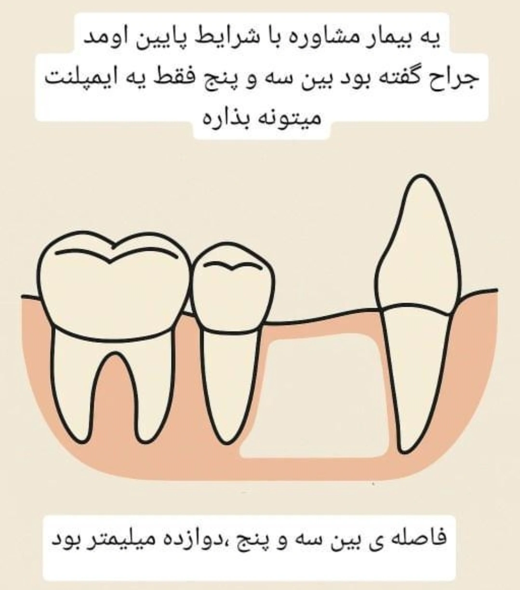

Chairside 36
A 12 mm Span and Only One Implant: How to Design the Prosthesis

The patient has an edentulous posterior span. The canine and the second premolar are still present, and the edentulous space sits between those two teeth. The mesiodistal width of this space measures 12 mm — wider than a typical premolar (about 7 mm), but not enough for two implants either. The surgical assessment confirms the same: only one implant fits in this space.
Four options on the table:
- One implant in the middle of the space and one wide, molar-like crown
- One implant in the middle of the space and two crowns with the appearance of two premolars
- Two premolar units, implant on the mesial side and a distal cantilever
- Two premolar units, implant on the distal side and a mesial cantilever
Answer: design three or four — that is, one implant plus one cantilever unit. The clinical rationale and the evidence behind it follow.
1. Why two implants do not fit in 12 mm
Three numbers have to sit side by side:
- At least 1.5 mm between the implant platform and the adjacent tooth
- At least 3 mm between two adjacent implants
- The diameter of the implants themselves
With two narrow implants (platform about 3.3 mm):
1.5 + 3.3 + 3 + 3.3 + 1.5 ≈ 12.6 mm
With two standard 4.1 mm diameter implants, that number reaches about 14 mm.
So 12 mm is short even for two narrow implants. If someone ignores that rule and brings the inter-implant distance under 3 mm, bone loss between the two implants rises noticeably and the papilla between them is lost. That is what the classic inter-implant distance studies showed.
Practical takeaway: when the space is 12 mm, two implants truly do not fit surgically or anatomically, so the implant-count debate is over. The remaining question is purely prosthetic: how do we rebuild this 12 mm width on a single implant.
2. The four options from a lever perspective
The key concept is the lever. Any part of the crown that sits off the implant axis transmits chewing force as bending into the abutment and the screw.
Option 1 (one wide crown) and option 2 (two crowns on a mid-span implant) are mechanically the same: a bilateral cantilever. They create two clinical problems.
The first problem is the lever. With a one-sided cantilever, the lever arm is a separate unit, so you can lighten or take the entire occlusal surface of that unit out of contact and you are done. When the implant is in the middle, the lever is bilateral and, inside one continuous crown, the mid portion over the implant must stay in function while the mesial and distal margins are lightened. Instead of taking one clear unit out of occlusion, you have to define a light/non-light boundary in the middle of a continuous occlusal surface. That has three practical flaws: it is hard to verify and reproduce with articulating paper; the boundary is imprecise because it is the same continuous crown; and the slightest attrition or drift of adjacent teeth puts contact back on the lever arm. If, out of caution, you lighten the whole crown, almost nothing remains for function.
The second problem is crown form. Emergence angle is the angle at which the crown leaves the implant axis as it emerges from under the gingiva to reach the tooth width. The implant is about 4 mm in diameter and we want to build 12 mm of width, so the crown must open steeply on both sides. The result is an over-contoured crown with a convex profile — a belly-like bulge at the neck that holds plaque and that the patient cannot clean under. Evidence shows that on bone-level implants, an angle greater than 30 degrees roughly doubles the prevalence of peri-implantitis, and adding a convex profile raises the risk further.
Options 3 and 4 (implant at one end of the space, one cantilever unit) have only one lever arm, and that is the main difference:
- The crown on the implant itself can be built with a natural contour and an acceptable emergence angle, because its width is roughly one premolar, not two.
- Only one unit sits off-axis, and that same unit can be deliberately lightened: narrower occlusal table, flatter cusp inclines, light centric contact, zero excursive contact.
In other words, options 3 and 4 move the risk from uncontrollable to controllable.
3. Evidence
Cantilevers are not a new topic on DentCast; we have covered them in several episodes, including episode 161, which focused specifically on implant-supported cantilever prostheses and reviewed the reference papers for this discussion. For a deeper dive, go back to those episodes. A summary of what those reviews mean for this case:
- A “one implant with one cantilever unit” design does not show lower implant survival than “two implants with two separate crowns.”
- No meaningful difference has been seen in marginal bone loss or probing depth between the two designs.
- What is meaningfully higher in the cantilever group is mechanical complications: screw loosening, veneer chipping, and loss of retention.
Office takeaway: the risk of this design is not biologic; it is mechanical. The main concern is screw loosening and chipping, not implant loss or bone resorption. And mechanical complications are exactly the ones that drop with sound design and occlusal control.
4. Clinical execution
Implant position. Decide first by bone volume and quality and by anatomy, not by an absolute rule. Place the implant on the side with better bone, keeping at least 1.5 mm from the adjacent tooth.
Cantilever direction. All else equal, a mesial cantilever is more sensible, because occlusal force magnitude rises as you move posteriorly. Overall, cantilever length matters far more than its direction.
Cantilever length. Shorter is better. Mechanical complications become more common especially beyond about 7 mm of extension. In a 12 mm space, if the implant is placed at one end with proper clearance, the cantilever unit is about 5.5 to 6 mm — under that threshold.
Occlusion. On the cantilever unit: narrow occlusal table, low cusp incline, clearance or very light contact in centric, and no contact in excursive movements. Lateral guidance should stay on the natural canine.
Retention type and material. Prefer screw-retained, both for retrievability (screw loosening is the most common complication) and to avoid residual cement. Monolithic zirconia lowers the risk of veneer chipping.
Contraindications. Bruxism and high occlusal force. In those patients a cantilever design is not recommended.
Follow-up. Because the dominant complications are mechanical, regular recall and checking torque and occlusal contacts are part of the treatment, not an add-on.
Talking with the patient. Explain that screw loosening or chipping can occur with this design, that both are repairable, and that if needed the cantilever can be removed.
5. Why “mid-span implant with the look of two crowns” is not the answer
This option looks intuitively attractive because it seems symmetric, but:
- It does not remove the lever; it makes it bilateral and eliminates targeted occlusal lightening.
- Contour and emergence angle go out of control on both sides, with the same hygiene consequences noted above.
- It has no dedicated evidence body, whereas for “one implant and one cantilever unit” there are systematic reviews, randomized trials, and long-term studies.
When two designs have similar mechanical logic, the weight of the evidence decides.
For further reading
A detailed discussion of cantilevers, including survival and complication data and the bone-loss question, is in the DentCast episodes on cantilevers, especially episode 161.
Reference papers:
- De Angelis P, et al. J Prosthodont. 2024;33(9):841-851
- Thoma DS, et al. J Clin Periodontol. 2021;48(11):1480-1490
- Aglietta M, et al. Clin Oral Implants Res. 2009;20(5):441-451
- Zurdo J, et al. Clin Oral Implants Res. 2009;20(Suppl 4):59-66
- Kondo Y, et al. Int J Implant Dent. 2024;10:57
- Schmid E, et al. Clin Implant Dent Relat Res. 2021;23(2):189-196
- Tarnow DP, et al. J Periodontol. 2000;71(4):546-549
- Katafuchi M, et al. J Clin Periodontol. 2018;45(2):225-232
️Clinical Tip: In a 12 mm space that takes only one implant, a wide mid-span crown makes the lever bilateral and takes emergence out of control. One implant at one end of the space plus a short cantilever unit turns the lever into a single arm you can lighten; the dominant risk is mechanical, not biologic — and manageable with occlusion and screw retention.
The content of this page is intended for the educational use of dentists and dental students.